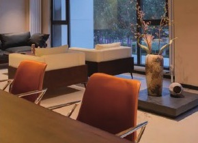
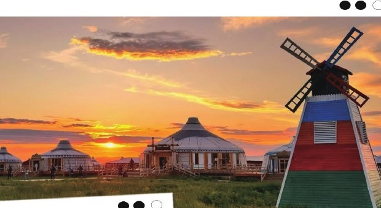

全国各地 → 海拉尔
安排 24 小时接机或接站，入住海拉尔舒适型 3 钻酒店。早到可自由探索古城夜市、西山森林公园等城市景观。
Aershan · 6 Days
草原、湿地、边境小城与火山湖泊，六天走入层林尽染。
不加说明文字，不做拼贴遮挡，用整幅高清风景呈现阿尔山的金与蓝。


安排 24 小时接机或接站，入住海拉尔舒适型 3 钻酒店。早到可自由探索古城夜市、西山森林公园等城市景观。
约 200 公里、3 小时。欣赏莫尔格勒河曲线与额尔古纳湿地秋色，安排深度骑马体验，晚住特色蒙古包。含早餐。
约 280 公里、4 小时。进入私家牧场，沿边防公路前往 186 彩带河；抵达满洲里后漫步城市，外观国门与套娃广场，入住舒适型 3 钻酒店。含早餐。
约 450 公里、6 小时。穿行风车公路，停留五里泉，打卡百年阿尔山火车站，入住阿尔山市区经济型酒店。含早餐。
进入阿尔山国家森林公园，全天约 8 小时游览天池、三潭峡、石塘林与杜鹃湖等代表景观，入住公园特色民宿。含早餐。
约 350 公里、5 小时。告别林海，车观玫瑰峰，返回海拉尔结束行程。建议预订 18:00 以后返程航班。含早餐。





全程含 5 次酒店早餐，其余正餐自理。
司机负责行程衔接、协助购票和入住，不陪同进入景区，不提供专职导游。
包含车位费、门票及行程所列娱乐项目；不占床、不含早餐。
单房差、正餐、个人消费、未列项目、景区非必乘交通及不可抗力产生的额外费用等。